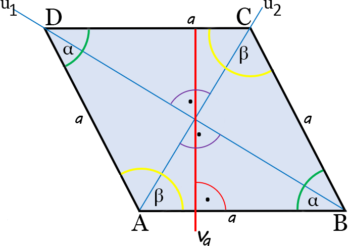

Calcit
Největší databáze vzorečků, kalkulaček a online kalkulátorů
Obvod a obsah kosočtverce
Vlastnosti kosočtverce
- Strany kosočtverce jsou stejně dlouhé, ale nesvírají pravý úhel (90°).
- Protilehlé úhly jsou stejně velké.
- Úhlopříčky jsou stejně dlouhé a navzájem se protínají v polovině svých délek.

Vzorečky
Obvod O = 4 * a
Obsah S = a * va
Vysvětlivky
a = označení strany
va = výška na stranu a
u = úhlopříčka
Výška je kolmá vzdálenost mezi dvěma stranami.
Úhlopříčka je úsečka vedoucí napříč obrazcem.
?
Kalkulace
a =va =